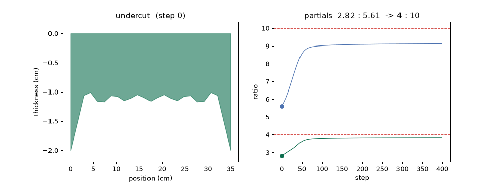
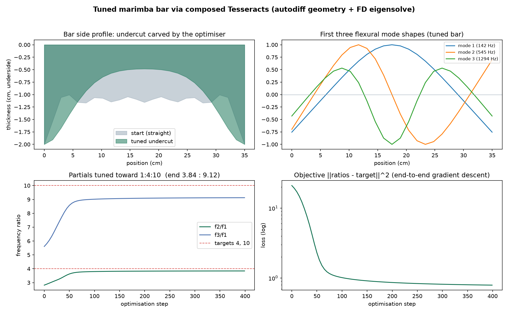

Tesseract Hackathon 2026 · inverse design & shape optimization
A struck bar rings inharmonic at 1 : 2.76 : 5.40. harmonicut carves the undercut that pulls its overtones toward the musical 1 : 4 : 10, by running gradient descent through a pipeline whose two halves are differentiated in completely different ways.

Why this is a Tesseract problem
The forward map is: design coefficients → a smooth thickness profile → assemble finite-element matrices → a generalized eigensolve → the flexural frequencies. That eigensolve is a black box for autodiff: scipy.linalg.eigh is a compiled LAPACK call JAX cannot trace. Eigen-derivatives are ill-conditioned near the modal crossings an optimiser drives straight into.
Coefficients to a smooth symmetric undercut. Analytic autodiff, so it serves exact jacobian, jvp and vjp.
Profile to frequencies through the black-box eigensolve. Reports a finite-difference jacobian, jvp and vjp.
Tesseract makes the two compose. Each is a self-contained component with the same derivative contract. tesseract-jax stitches the analytic jacobian of one to the finite-difference jacobian of the other into a single end-to-end gradient. Neither side can produce that gradient alone. That is Tesseract as load-bearing infrastructure, not a costume.
Gradients doing real work
Driven by that gradient, the objective falls from 21.0 to 0.79 in 400 steps, while the first three partials move from an untuned 2.82 : 5.61 to 3.84 : 9.12, toward the marimba ideal 1 : 4 : 10. The undercut the optimiser carves is deep in the middle and full at the struck ends, which is exactly the shape instrument makers cut by hand: an independent check that the gradients point the right way.

Reproduce
pip install "tesseract-core[runtime]" tesseract-jax "jax[cpu]" scipy optax matplotlib equinox tesseract build geometry tesseract build beam_eigen python scripts/optimize.py # gradient-boundary check, then the inverse design python scripts/visualize.py # the figure and the animation above
Everything is deterministic and offline. The full writeup, the two Tesseracts and the scripts are in the repository.